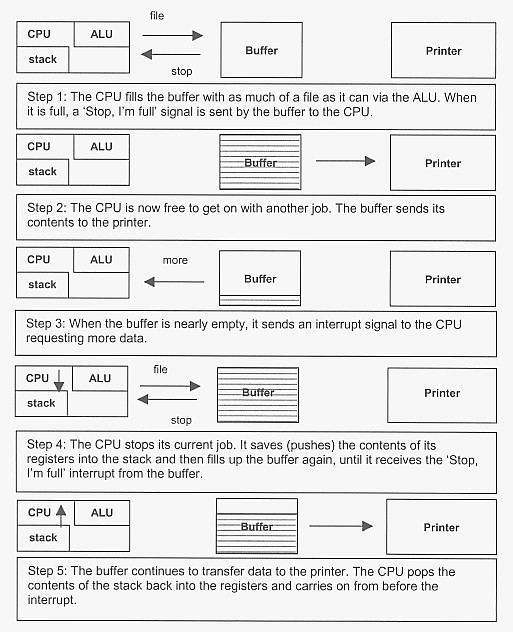

<div id="jsn-maincontent" class="span9 order1 row-fluid">
  <div id="jsn-maincontent_inner">
    <div id="jsn-centercol">
      <div id="jsn-centercol_inner">
        <div id="jsn-mainbody-content" class="jsn-hasmainbody">
          <div id="jsn-mainbody-content-inner1">
            <div id="jsn-mainbody-content-inner2">
              <div id="jsn-mainbody-content-inner3">
                <div id="jsn-mainbody-content-inner4" class="row-fluid">
                  <div id="jsn-mainbody-content-inner" class="span12 order1">
                    <div id="jsn-mainbody">
                      <div id="system-message-container"></div>

                      <div
                        class="item-page"
                        itemscope
                        itemtype="https://schema.org/Article"
                      >
                        <meta itemprop="inLanguage" content="en-GB" />

                        <div itemprop="articleBody">
                          <p></p>
                          <h1 style="text-align: center">
                            The transfer of data using buffers and
                            interrupts&nbsp;and double buffering
                          </h1>
                          <p>
                            <strong>
                              <span class="NormalContentHeading"
                                >Introduction - speed mismatch
                              </span></strong
                            ><br />
                            When two devices working at different speeds try to
                            communicate, they have to do so at the speed of the
                            slowest device. This is not good because the CPU
                            gets tied up managing the transfer of a constant
                            stream of data to a printer, for example. That means
                            it can't work on other tasks that may be more urgent
                            than mere printing! However, by using a 'buffer',
                            the problem of working at the speed of the slowest
                            device and slowing the CPU down can largely be
                            overcome. A buffer is simply some memory that
                            improves the efficiency of data transfer between two
                            devices working at different speeds by allowing big
                            blocks of data to be collected together and then
                            sent at once rather than as a stream of data that
                            needs constant CPU management time. A buffer can
                            also be an external piece of memory designed
                            specifically for the purpose of collecting data from
                            a CPU and then taking over the management of the
                            transfer between itself and the device it is
                            connected to.
                          </p>

                          <p>
                            <strong
                              ><span class="NormalContentHeading"
                                >An example of the use of a buffer</span
                              ></strong
                            ><br />
                            All devices such as printers come with their own
                            buffers and you can usually upgrade the amount of
                            buffer memory you have in the printer. The bigger
                            the buffer in a printer, the more data it can accept
                            before it tells the computer that is sending the
                            data to stop for a minute because it is full and
                            needs to empty itself (by printing). Large buffers
                            are particularly important on networked printers
                            such as those commonly found in schools and
                            colleges. A lot of people will potentially be
                            sending a lot of work at the same time. This could
                            result in the system grinding to a halt, as the
                            server tries to manage all of the jobs being sent to
                            the printer. If, however, the jobs could be sent to
                            the printer and stored there, the server would be
                            free to get on with other things and the printer
                            could print at its leisure. Consider sending a file
                            to a printer. The file is held in memory (RAM). We
                            know that RAM works very quickly and we know that
                            all data in and out of the CPU goes via the ALU -
                            that is one of the functions of the ALU. We also
                            know that the printer churns out pages much slower
                            than the speed a CPU can work at!
                          </p>
                          <p>
                            <span class="NormalContentHeading"
                              >Assume there isn't a buffer for a moment.</span
                            >
                          </p>
                          <center>
                            
                          </center>
                          <p>&nbsp;</p>
                          <center>
                            <strong class="strong"
                              >The transfer of data without a buffer.</strong
                            >
                          </center>
                          <p>
                            The CPU will take charge of the data transfer. The
                            data goes from the RAM, via the ALU and out to the
                            printer. The printer works very slowly compared to
                            the CPU, however. If you send data constantly, byte
                            by byte, the CPU will have to slow down how fast it
                            sends the data to the printer so that the printer
                            can receive the data. This means, however, that the
                            CPU is not being used as efficiently as possible.
                          </p>
                          <p>
                            <span class="NormalContentHeading"
                              >If you provide a buffer, however, data transfer
                              can be improved.</span
                            >
                          </p>
                          <center>
                            <p>
                              
                            </p>
                            <p>
                              <strong class="strong"
                                >The transfer of data with a buffer.</strong
                              >
                            </p>
                          </center>
                          <p>
                            When the CPU wants to send a file, all of the data
                            can be transferred to the buffer in one go. The
                            buffer works at the speed of the CPU so data
                            transfer between the CPU and the buffer is very
                            fast. The CPU is now free to do other tasks while
                            the buffer can transfer data to the printer. This
                            immediately improves the transfer of data because
                            the CPU is not waiting around, trying to constantly
                            send data. It can send data in one, high-speed burst
                            and then get on with something else!
                          </p>
                          <p>
                            <strong
                              ><span class="NormalContentHeading"
                                >Buffers and interrupts</span
                              ></strong
                            ><br />
                            A complication can arise, however, if you need to
                            send a file to a printer but the whole file won't
                            fit into the buffer because the file is too big for
                            it! To deal with this situation, we need to use
                            interrupts. These are simply signals sent to the
                            CPU. They tell the CPU to stop what it is doing and
                            give some time to whoever sent the interrupt.
                            Remember, the CPU, whilst very fast, can only
                            actually carry out one job at a time!
                          </p>
                          <p>
                            The CPU, via the ALU, fills the buffer with as much
                            of the file as it can. When the buffer is full, it
                            sends an interrupt to the CPU to say 'Stop'. The
                            buffer then sends the data to the printer. The CPU,
                            meanwhile, is free to get on with another job. When
                            the buffer is nearly empty, it sends an interrupt
                            signal to the CPU, to say 'More data, please'. When
                            the CPU gets this interrupt, it checks its priority.
                            The CPU has to decide if the job it is currently
                            doing is more important than filling up the buffer!
                            If it is, then it carries on with what it is doing
                            until it is finished, and then it services the
                            buffer interrupt. If it isn't more important, then
                            it stops doing what it is doing and 'pushes' the
                            contents of its registers onto the stack, thereby
                            saving where it was before the interrupt happened!
                            The CPU then sends the buffer some more of the file
                            until it gets the 'Stop' signal again. The buffer
                            resumes sending data to the printer whilst the CPU
                            'pops' the contents of the stack back into its
                            registers and continues from where it left off
                            before the interruption. This process is repeated
                            until the whole file has been sent!
                          </p>
                          <p>
                            The transfer of data between two devices that work
                            at different speeds can be made far more efficient
                            by using a buffer because we can send data in large
                            blocks rather than in lots of small quantities. We
                            have looked in some detail at how you would transfer
                            a file from memory to a printer using a buffer
                            designed for the purpose, but we could equally have
                            used the example of transferring data from memory to
                            a secondary storage device such as a hard disk, for
                            example.
                          </p>
                          <center>
                            
                          </center>
                          <p style="text-align: center">
                            &nbsp;<strong class="strong"
                              >The transfer of large data files.</strong
                            >
                          </p>
                          <p style="text-align: left">
                            <strong>Double buffering</strong><br />The above
                            model can be improved using double buffering. This
                            simply means having two buffers rather than one, and
                            whilst one is emptying, the other is filling up.
                            When the first one empties, the second one starts to
                            empty and the first one starts to fill up. This is
                            used anywhere where a lot of data has to be
                            transfered and it is important to do this as quickly
                            as possible. Typical examples apart from printing
                            would include media streaming, where one video
                            stream is being sent to the graphics and sound card
                            from one buffer whilst another stream is filling up
                            a second buffer, ready to be used when the first
                            buffer is empty, and transfering data from
                            camcorders to a computer.
                          </p>
                          <p></p>
                        </div>
                      </div>
                    </div>
                  </div>
                </div>
              </div>
            </div>
          </div>
        </div>
      </div>
    </div>
  </div>
</div>
